Um guia rápido, passo a passo e sem complicação para quem treina e para quem comanda as aulas. Leia como quem escolhe o próximo treino: uma missão de cada vez.
As aulas são presenciais, com o professor. O app existe para uma coisa: garantir o seu lugar na turma em dois toques, avisar quando abrir vaga e mostrar ao professor quem vem.
Cada aula tem número limitado de vagas. Quem reserva primeiro garante o lugar.
Se alguém cancelar, o primeiro da fila é confirmado sozinho, e você recebe um aviso.
Reservar e cancelar ficam abertos até 1 hora antes da aula. Depois, só falando com o professor.
Todo sábado de manhã o Rafael publica o treino da semana seguinte. O app avisa você.
Seis missões: entrar, reservar, treinar, acompanhar, personalizar e cuidar dos avisos.
O professor te envia um link de convite (pelo WhatsApp). Toque nele, crie sua senha e pronto. Nas próximas vezes, entre com seu e-mail e senha.
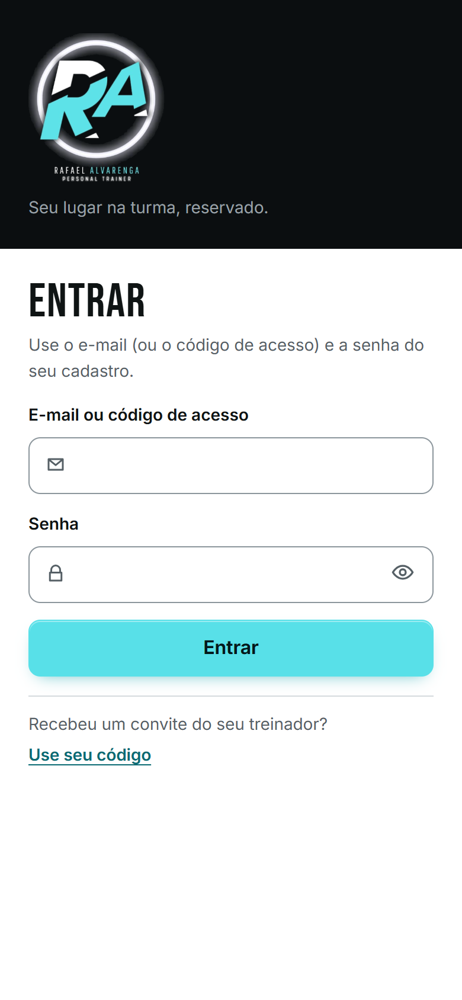
É a primeira tela que você vê. Tudo o que importa hoje, em uma rolagem:
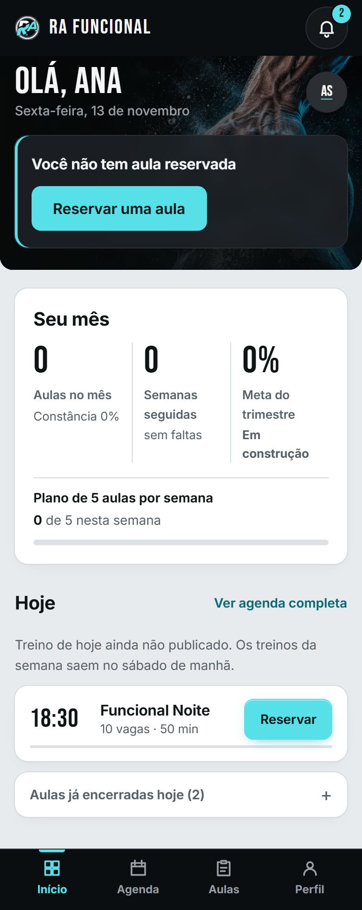
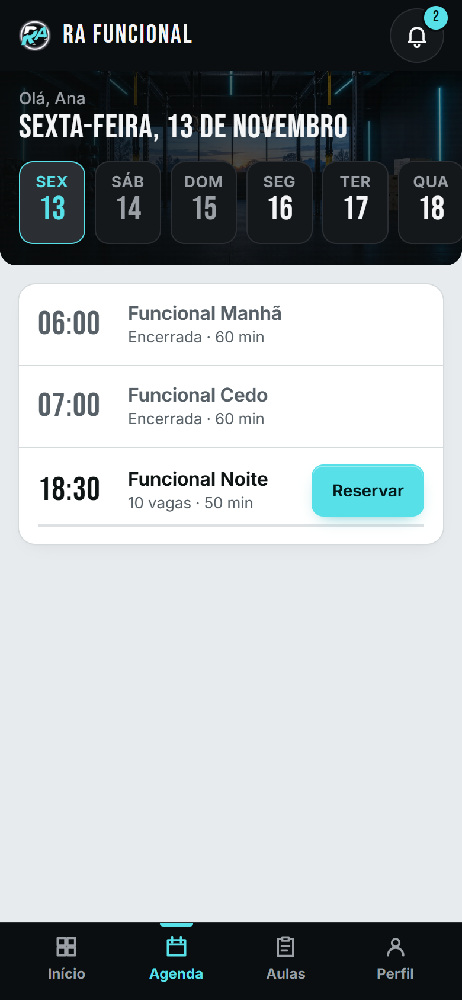
Na página da aula você encontra o horário, o coach, a barra de vagas e o treino do dia. Se houver vídeo de demonstração, ele aparece como um link discreto: o treino acontece presencialmente, o vídeo é só uma ajuda.
Mais abaixo, Quem vai nessa aula mostra os colegas confirmados. Treinar em turma motiva.
Para cancelar, toque em Cancelar; o app pede uma confirmação para evitar toque sem querer. Cancele com antecedência: assim a vaga vai para quem está na fila.
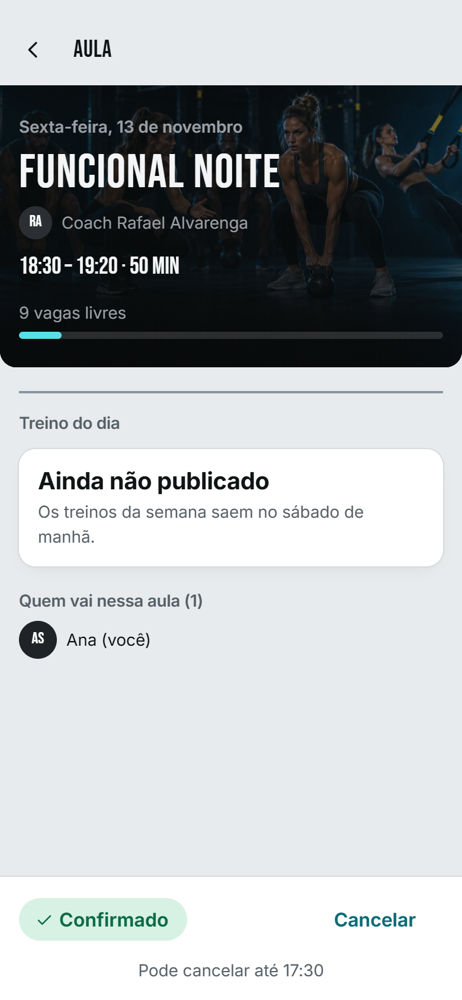
Toque em Entrar na fila. Você recebe um número (Nº1, Nº2…). Se alguém cancelar, o Nº1 é confirmado automaticamente e recebe uma notificação. Você pode sair da fila quando quiser.
Em Aulas ficam suas reservas em três abas: Próximas, Lista de espera e Histórico. Mais abaixo, o desempenho do mês, as últimas 8 semanas (uma barra por semana, com uma linha tracejada no seu plano) e o calendário de presença (toque para abrir).
Bronze metade da meta Prata três quartos Ouro meta cumprida
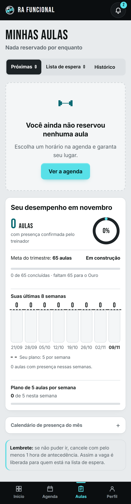
A aba Histórico lista as aulas que já terminaram e se você compareceu. Boa para conferir a própria constância.
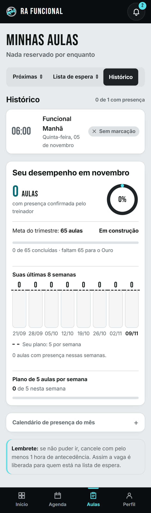
Avisos (toque no sino no topo; no computador, em Avisos no menu lateral; o número mostra quantos não foram lidos): vaga liberada, aula cancelada, treinos da semana e recados do professor. Use os filtros Todas, Vagas liberadas e Avisos. O ponto verde marca o que ainda não foi lido.
Perfil: troque sua foto, ajuste nome e telefone, troque sua senha quando quiser, ative as notificações no celular e instale o app.
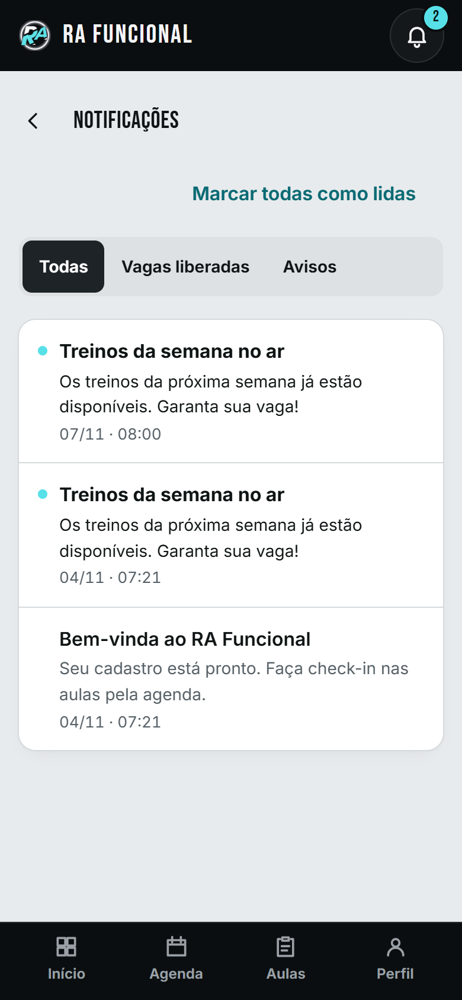
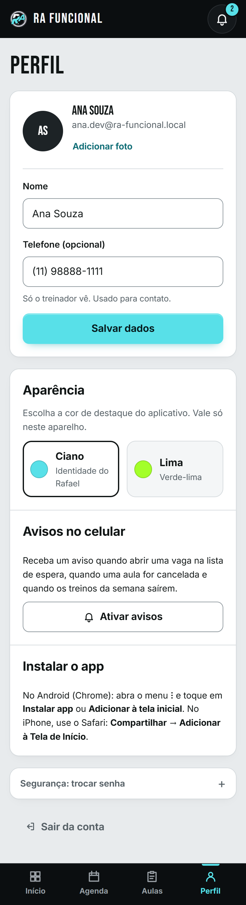
O app também se adapta ao computador: menu lateral à esquerda e, na Agenda, a lista do dia ao lado do detalhe da aula.
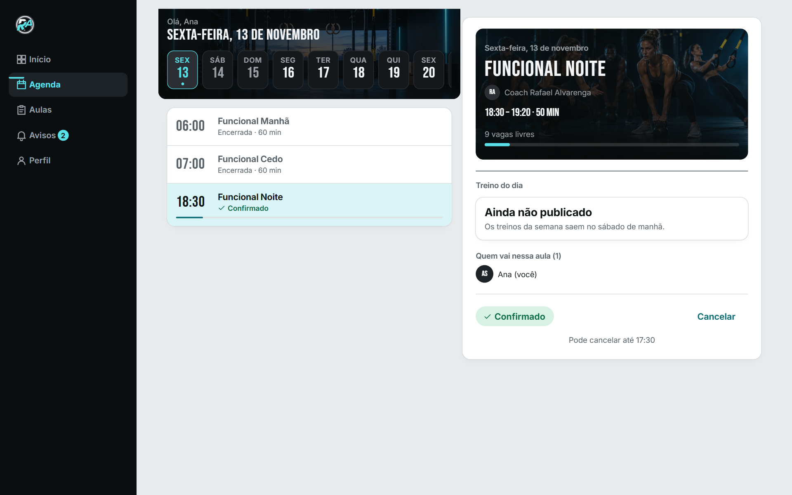
Você comanda o dia pelo celular ou pelo computador. São cinco áreas no menu: Hoje, Turmas, Treinos, Alunos e Perfil.
Entrar: na tela de login, digite o seu código de acesso (no lugar do e-mail) e a sua senha. Ao receber a senha provisória, troque por uma só sua em Perfil → Trocar senha.
Logo ao entrar você vê os números de hoje:
Abaixo: turmas de hoje (com atalho para a chamada), o treino de hoje, o aviso aos alunos, a frequência do estúdio (ocupação das últimas 8 semanas), a lista Precisa de atenção (alunos com 2 ou mais faltas em 30 dias ou sem aula há mais de 14 dias) e a ocupação da semana.
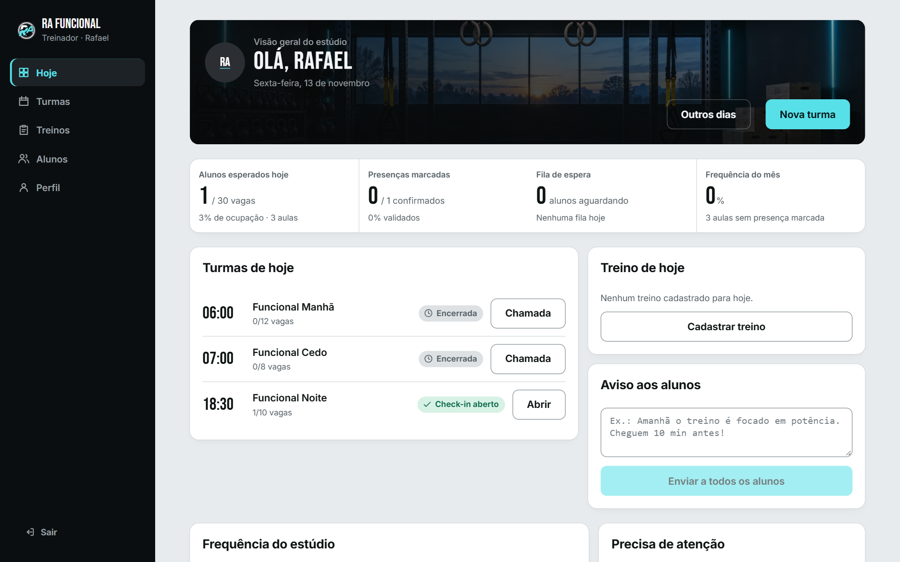
Em Hoje, toque em Outros dias para ver as aulas de ontem, de amanhã ou de qualquer dia (use Ontem / Hoje / Amanhã e as setas). Toque na aula para abrir a lista e marcar presença.
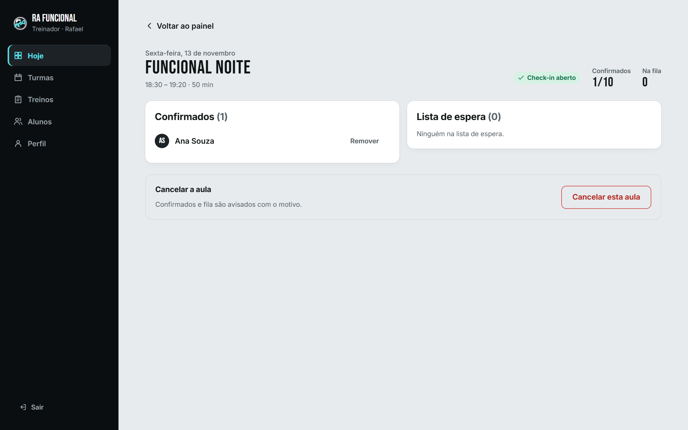
As aulas nascem das turmas semanais. Cada turma tem nome, dia da semana, horário, duração e vagas. O sistema gera as aulas das próximas 4 semanas sozinho.
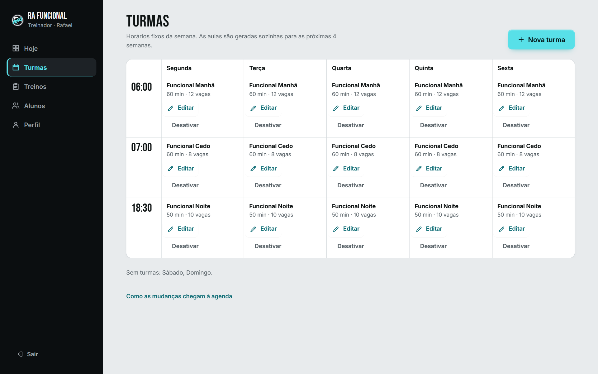
Em Treinos você vê a semana em sete cartões. Em cada dia, cadastre o título, a descrição (blocos como Aquecimento: … viram seções) e, se quiser, um link de vídeo.
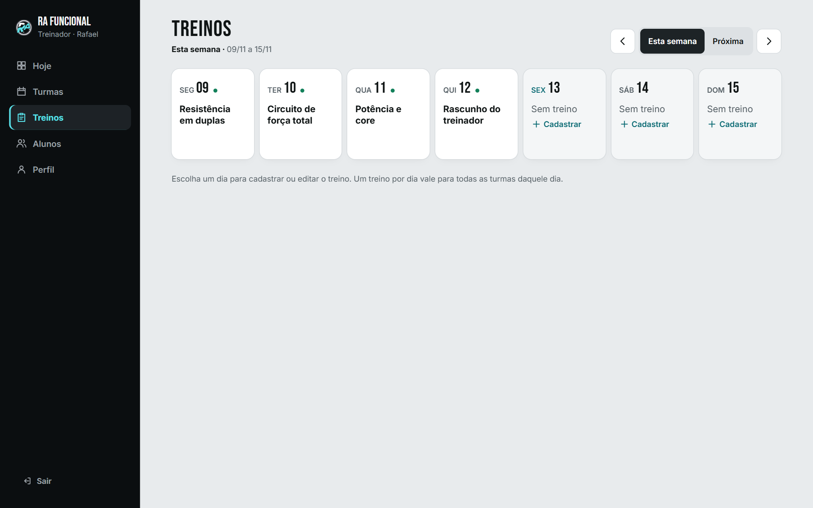
A tela tem três abas: Lista, Relatório e Convites.
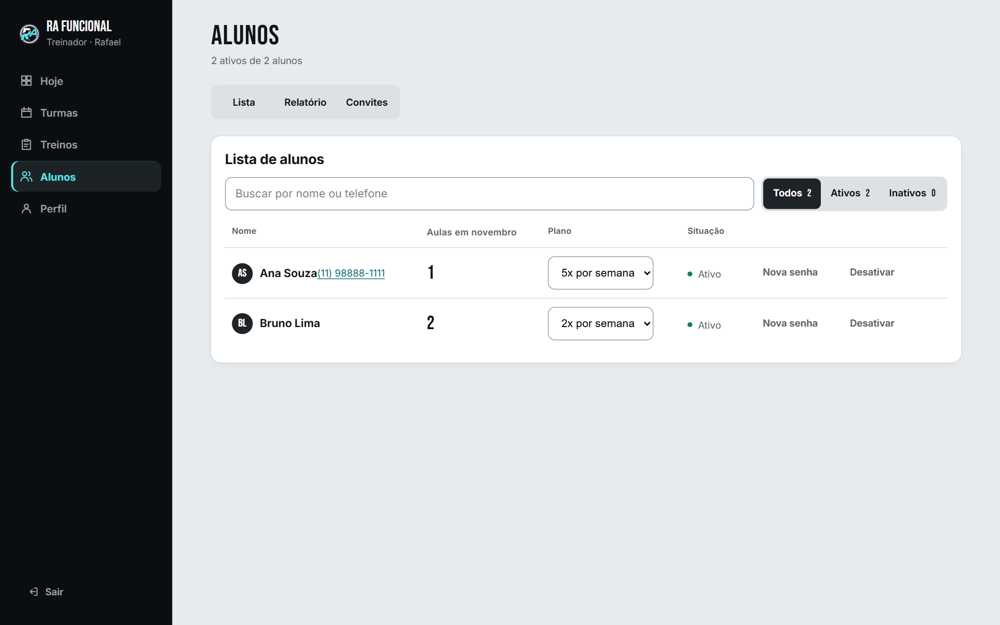
Em Hoje, escreva uma mensagem curta (até 300 caracteres) e toque em Enviar a todos os alunos. Cada aluno ativo recebe a notificação, e o último recado aparece no Início dele como Recado do coach.
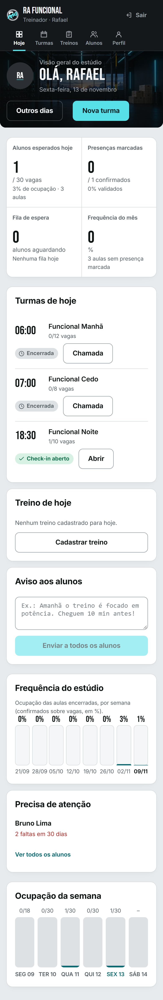
Toque em Perfil no menu (ou na sua foto no Início). Lá você troca a foto, o nome e o telefone. A sua foto e o seu nome aparecem para os alunos como Coach no detalhe das aulas e no Início.
A foto é recortada em quadrado e reduzida automaticamente. Use uma imagem com o rosto bem centralizado.
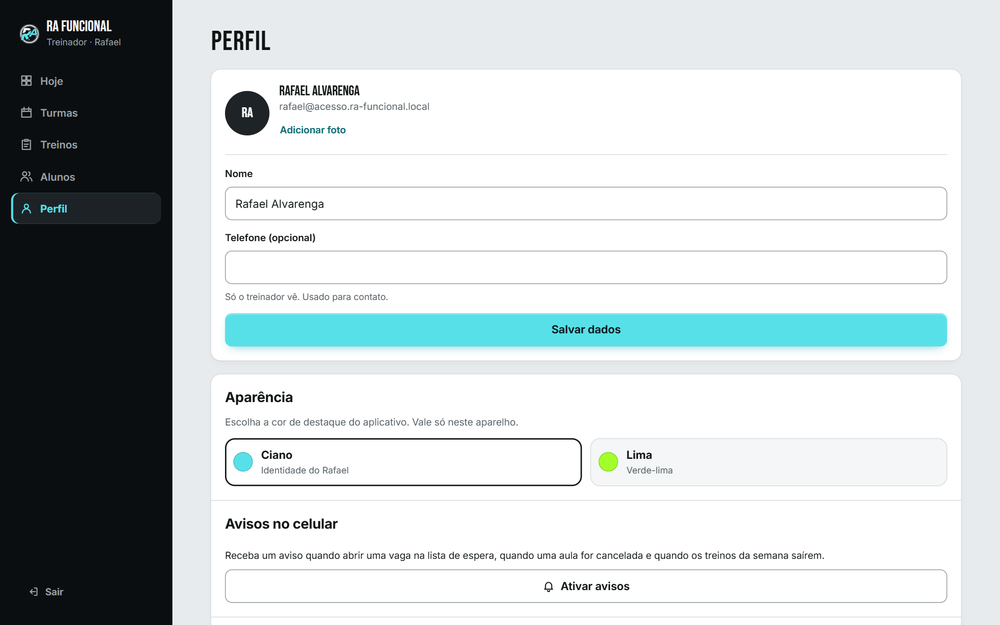
| Regra | Como funciona |
|---|---|
| Vagas | Cada aula tem um limite. Reservou, está dentro; lotou, vai para a fila. |
| Fecha 1 hora antes | Reservar e cancelar só até 1 hora antes do início. O professor pode remover alguém a qualquer momento. |
| Fila | Primeiro a entrar, primeiro a ser chamado. Se alguém cancelar até 1 h antes, o Nº1 é confirmado automaticamente e avisado. |
| Treinos da semana | Publicados no sábado às 8h para a semana seguinte. |
| Convite | Só entra quem foi convidado. O link vale 30 dias. |
| Presença | Marcada pelo professor depois da aula. Sem marcação = falta. |
| Plano | Aulas por semana definidas pelo professor. Só informa, não bloqueia. |
| Meta do trimestre | 13 vezes o plano semanal (39 aulas se não houver plano). Bronze: 50%, Prata: 75%, Ouro: 100%. |
| Semanas seguidas | Semanas com pelo menos uma presença e nenhuma falta marcada. Semana atual em andamento não quebra a sequência. |
Confira se faltam mais de 1 hora para o início, se a aula tem vaga e se sua conta está ativa. Se a conta estiver desativada, fale com o professor.
Depois que o prazo de 1 hora fecha, só o professor consegue remover sua reserva. Avise-o pelo WhatsApp.
A fila só anda se alguém cancelar até 1 hora antes. Ative as notificações no Perfil para ser avisado na hora.
Avise o professor. Em Alunos, ele toca em Nova senha e te entrega uma senha provisória (por WhatsApp, por exemplo). Entre com seu e-mail e essa senha: o app pede para você criar uma senha nova na hora, e só então libera o uso.
Ela só conta aulas com presença marcada pelo professor. Se faltou marcar, peça a ele para ajustar na tela da aula (Hoje).
Toque novamente no botão marcado para limpar, ou toque no outro botão para trocar.
Ele pode ainda não ter aceitado o convite ou estar desativado. Veja em Alunos e em Convites.
Feche e abra o app. Se estiver sem internet, ele avisa no topo e volta ao normal quando a conexão voltar.